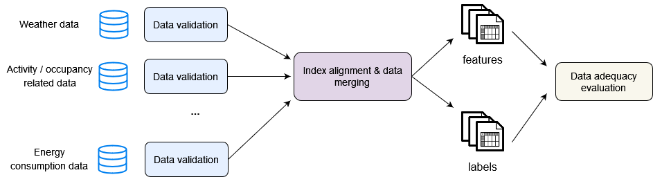

The preprocess pipeline
Contents
The preprocess pipeline#
The preprocessing of the input data includes three (3) main tasks:
Data validation - Do the datasets have the expected structure?
Data alignment and merging - Do the datasets have the same indices? If they do, merge them. If not, first align their indices and then merge them.
Evaluation of data adequacy - Do we have enough data to understand and model the energy consumption of the building?
The input data preprocessing tasks are summarized below:

Data validation#
Raw input data is always treated as a partitioned dataset. This means that both features and labels are loaded by eensight as dictionaries with file names as keys and load functions as values. Each load function returns a pandas DataFrame. If there are more than one (1) feature and/or label files, eensight validates each file’s data separately.
The input data validation has the following goals:
1. Change feature names to ones that are expected by eensight.
eensight expects tabular features where the datetime information is provided by a column named timestamp, and the outdoor dry bulb temperature information is provided by a column named temperature. In addition, label data (energy consumption) is also expected in tabular form, where there is one column named consumption.
As an example, the dataset with site_id="b04" has information about both plug and hvac loads:
from eensight.utils import load_catalog
catalog = load_catalog(store_uri="../../data", site_id="b04", namespace="train")
labels = catalog.load("train.input-labels")
load_fn = labels["consumption.csv"]
labels = load_fn()
labels.head()
| timestamp | plugs | hvac | total | |
|---|---|---|---|---|
| 0 | 2018-01-01 01:00:00 | 1.4 | 19.500000 | 20.900000 |
| 1 | 2018-01-01 01:15:00 | 1.5 | 19.889999 | 21.389999 |
| 2 | 2018-01-01 01:30:00 | 1.3 | 19.299999 | 20.599999 |
| 3 | 2018-01-01 01:45:00 | 1.4 | 18.889999 | 20.289999 |
| 4 | 2018-01-01 02:00:00 | 1.3 | 24.700001 | 26.000001 |
If eensight users want to apply its functionality on the HVAC load, they can pass the following option to the command line:
--param rebind-names.consumption=hvac
The result is that the hvac column will be used in all places in the eensight code where a consumption column is expected (everywhere labels are expected).
Note:
Passing either
name-of-parameterorname_of_parameterto the command line, will update thename_of_parameterparameter in theeensightcode.
Similarly, if a dataset includes outdoor temperature in a column named Temp, passing the following option to the command line will guide eensight to use this column in all places where a temperature column is expected:
--param rebind-names.temperature=Temp
2. Make sure that a column named timestamp exists.
The timestamp column will be parsed as datetime. The default date format is %Y-%m-%d %H:%M:%S.
3. Check that the values of the timestamp column are unique, and if they are not, remove duplicate dates.
This function is controlled by a threshold parameter. If the range of the values that share a timestamp is less than threshold times the standard deviation of the data, they are replaced by their average. Otherwise, they are treated as missing values.
Index alignment and data merging#
First, eensight checks that the labels dataset has only one time step with duration that is less than one (1) day. This is needed because energy consumption is a cumulative variable: the value at any given timestamp corresponds to the consumption during the period between this timestamp and the preceding one. When more than one time steps with duration that is less than one (1) day exist, the meaning of the consumption values becomes ambiguous as a target for any predictive model.
If the labels dataset has indeed only one time step, its index becomes the primary index for all features. Alignment is needed only when features have different time steps than the labels (for instance, hourly temperature data, but 15-minute interval consumption data).
For data that is numerical, eensight provides two (2) approaches for alignment. The first approach interpolates the data to match the primary index, the second matches the primary index on the nearest key of the feature’s index.
For data that is both numerical and cumulative (temperature is non-cumulative, whereas consumption is cumulative), alignment is done by first calculating the cumulative sum of the feature to align, then applying the alignment method (by interpolation or by distance), and finally calculating the first discrete differences so that to reverse the cumulative sum transformation.
Alignment of categorical features is always done by timestamp distance.
eensight can align daily data to sub-daily indices (for instance, daily holiday data to hourly consumption data).
Finally, aligning sub-daily data to a daily index is not supported. This should be part of a feature engineering process and not a data preprocessing one.
Data adequacy evaluation#
The final step of the preprocess pipeline is to check that there is enough data available for the energy consumption of the building under study. Baseline energy consumption data must cover at least one (1) full year before any energy efficiency intervention.
In addition, data must be available for over a certain percentage of hours in each calendar month. The default value of this percentage is 10%, but it is a user-defined parameter, so it can be adjusted.
Before evaluating the adequacy of the available data, eensight screens for non-physically plausible values in the consumption data. Long streaks of constant values are filtered out as well (here long is defined in hours by no_change_window). However, long streaks of constant values will not be filtered out if they represent more than the max_pct_constant percentange of the dataset.